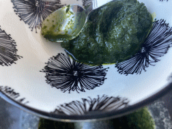
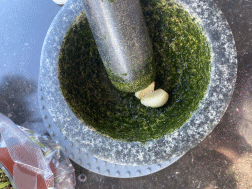
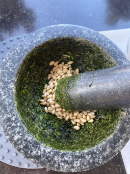
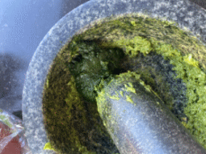
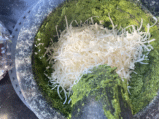
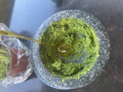
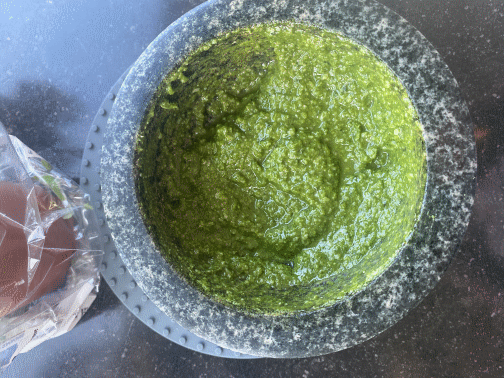

De beste pesto!
Benodigdheden
tenen knoflook, gepeld
20g pijnboompitten
Handjevol basilicum bladeren
30g geraspte Parmezaanse kaas, 10g geraspte pecorino Romano kaas
75g extra virgin olijf olie
Een snufje zout
________________________________________________________________________________________________
Pesto in de vijzel! Big time saving tip: als je geen vijzel hebt, doe alle ingredienten in de blender/keukenmachine/staafmixer en dan heb je ook een heerlijke pesto.
1. Bewerk de basilicum tot een punt waar zijn moeder hem niet meer zou herkennen. Ik doe de basillicum eerst zodat je die goed fijn kan krijgen, stel je maakt het voor een date wil je niet dat er vanalles tussen je tanden zit.
verwijder de basilicum uit de vijzel
2. Pel de knoflook en voeg die toe samen met een snufje zoet, bewerk het tot het een grove pesto is
3. Voeg daarna de pijnboompitten toe, en bewerk deze totdat de substantie redelijk smooth
Kleine warning voor dit recept. Je huis ruikt de hele dag heerlijk
4. voeg de basilicum + nog een snufje zoek toe en mix!
5. KAAAAAAAAAAAAAAAS
6. en nu de olijfolie erbij, giet het er langzaam in terwijl je met een spateltje het goed door elkaar mixt.
Gefeliciteerd! Je hebt nu de lekkerste pesto van de wereld gemaakt!
